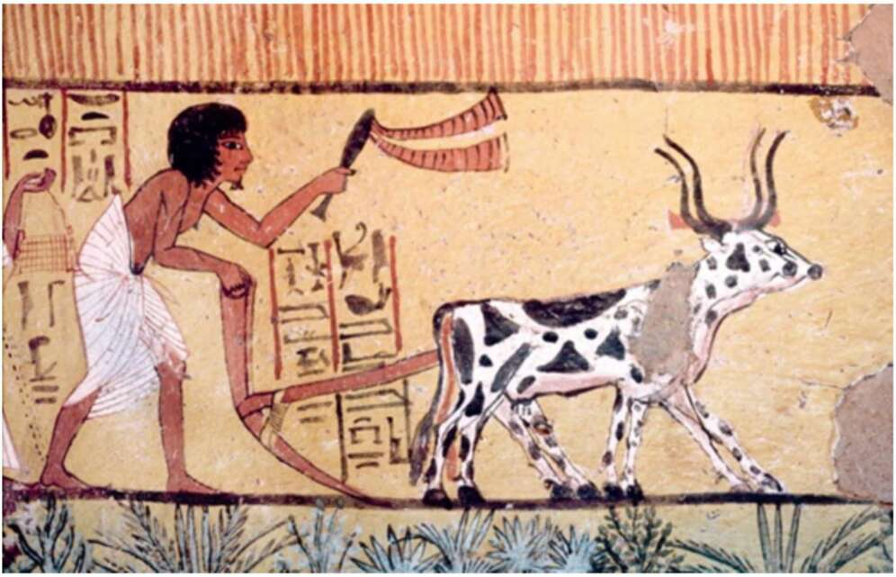

restrains male aggression and enables humans selectively to control the herd’s procreation. 14. A painting from an Egyptian grave, c.1200 Bc: A pair of oxen ploughing a field. In the wild, cattle roamed as they pleased in herds with a complex social structure. The castrated and domesticated ox wasted away his life under the lash and in a narrow pen, labouring alone or in pairs in a way that suited neither its body nor its social and emotional needs. When an ox could no longer pull the plough, it was slaughtered. (Note the hunched position of the Egyptian farmer who, much like the ox, spent his life in hard labour oppressive to his body, his mind and his social relationships.) In many New Guinean societies, the wealth of a person has traditionally been determined by the number of pigs he or she owns. To ensure that the pigs can’t run away, farmers in northern New Guinea slice off a chunk of each pig’s nose. This causes severe pain whenever the pig tries to sniff. Since the pigs cannot find food or even find their way around without sniffing, this mutilation makes them completely dependent on their human owners. In another area of New Guinea, it has been customary to gouge out pigs’ eyes, so that they cannot even see where they’re going.” The dairy industry has its own ways of forcing animals to do its will.
